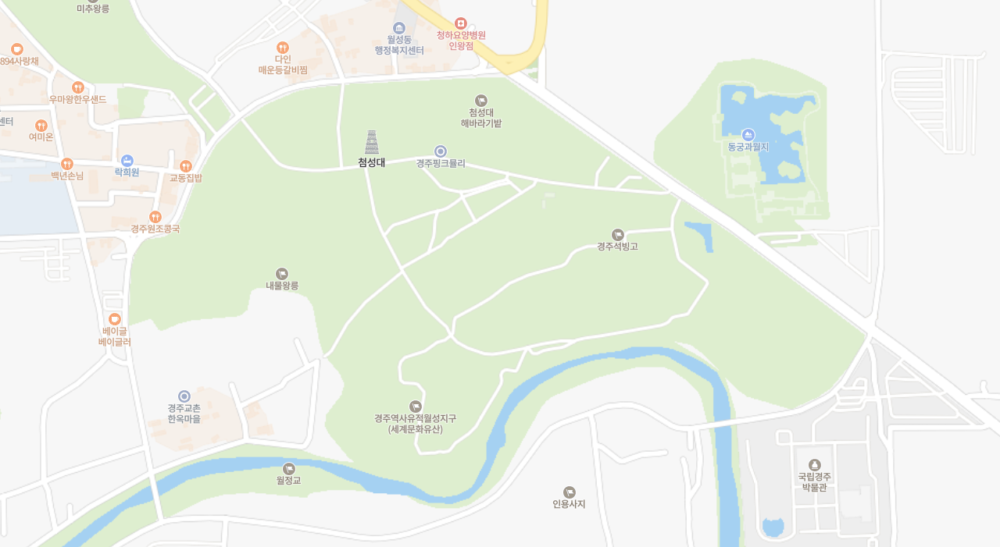
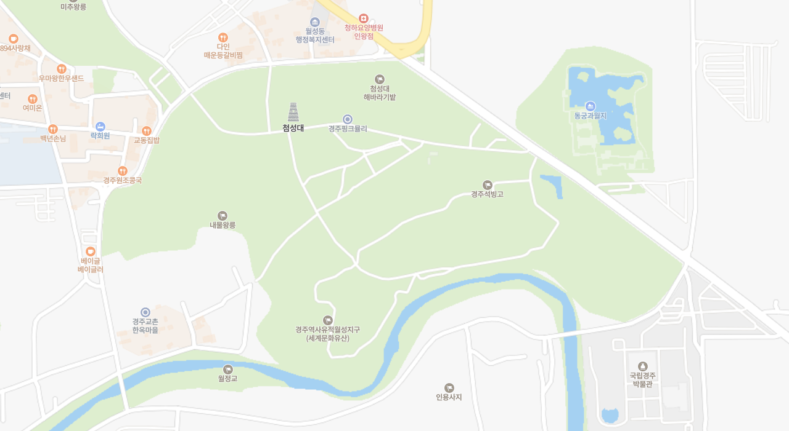

도보
자전거
1) 창덕궁 달빛기행
- 조선시대 왕들의 사랑을 가장 많이 받았던 궁, 창덕궁에 여러분을 초대합니다.
- 은은한 달빛 아래 녹음이 어우러진 창덕궁에서 청사초롱으로 불을 밝히며 궁궐 곳곳 숨은 옛이야기를 착아보세요. <창덕궁 달빛기행>이 여러분을 기다립니다.
2) 경복궁 별빛야행
- 별 가득한 밤, 경복궁 달빛기행에 여러분을 초대합니다. 은은한 달빛 아래 경복궁 소주방에서 국악공연을 즐기며 수라상을 맛보고 전문해설사와 함께 경복궁 달빛산책을 떠나볼까요.
- 장고, 집옥재와 팔우정, 건청궁을 거치며 궁궐의 옛 이야기를 마주하고 쏟아지는 별빛아래에서 향원정의 정취를 느껴보세요.
- 달빛 가득한 밤, 경복궁의 문이 열립니다.
3) 신라 달빛기행
-달빛기행으로 만나는 통일신라 그 날 우리나라에 새로운 혁명, 삼국통일을 이뤘던 신라의 문화들을 모두 함께 달빛과 함께 걸으며 다시 만나보는 시간을 가져보자는 취지로 기획하게 된 기행축제입니다. 비록 후삼국으로 나뉜 신라여도, 우리나라에 여러 새로운 폭풍을 몰고 온 신라로 함께 떠나봅시다!

 
